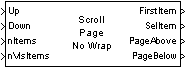
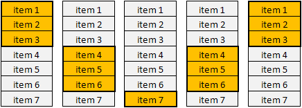

| MBDS Environment |
|
Scroll Page No Wrap |
MATLAB Helpdesk |
General
Scroll pagewise within a list box. There is neither a highlighted/selected item nor a roundtrip or wrap around at the beginning or end of the list.
Library
DescriptionMBDS Blockset

This block is used to scroll page by page within a list box. Thereby, the number of items that constitute a page is determined by the input signal nVisItems. No item will be highlighted/selected. Nevertheless, the output port SelItem is required by some gravis blocks. To fulfill both needs simply the total number of list items nItems is provided.
A visualization of the scrolling behavior using this block is illustrated in the following figure:

Remarks:
Figure 1: Scrolling down in a list box with nItems = 7 and nVisItems = 3 items
- Keep in mind that item i has index i -1.
- As distinguished from block ScrollPageWrapAround, there is no wrap around at the beginning or end of the list box.
- Scrolling up/down referes to the visual location and not to the page number.
Inputs and Outputs
Port I/O Data Type Description Up In boolean Signal to move up the selected item Down In boolean Singal to move down the selected item nItems In uint8 Total number of list box items nVisItems In uint8 Number of visible item FirstItem Out uint8 Index of the first visible item SelItem Out uint8 Total number of list items PageAbove Out boolean Indicates if further pages exist above the selected item PageBelow Out boolean Indicates if further pages exist below the selected item
Example
Refer to the example.